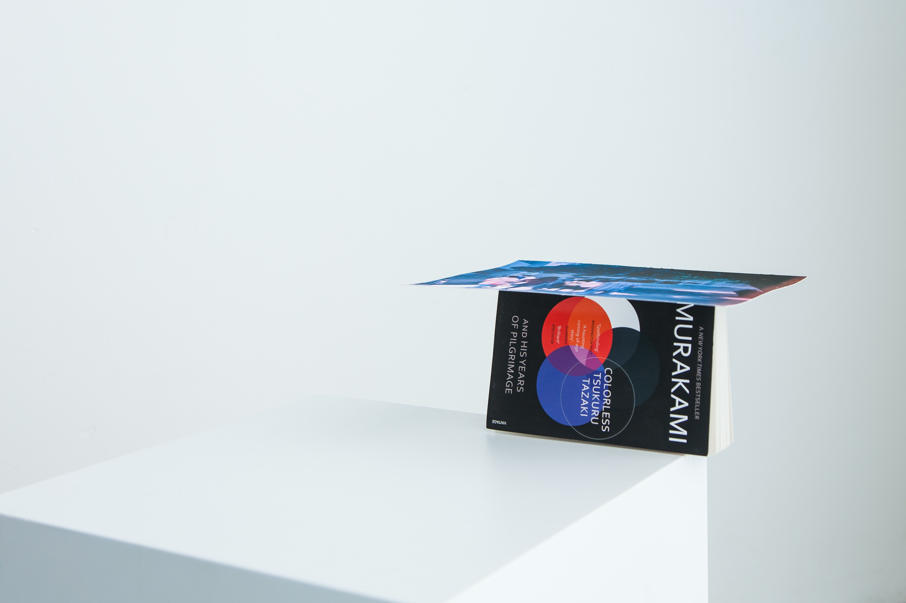
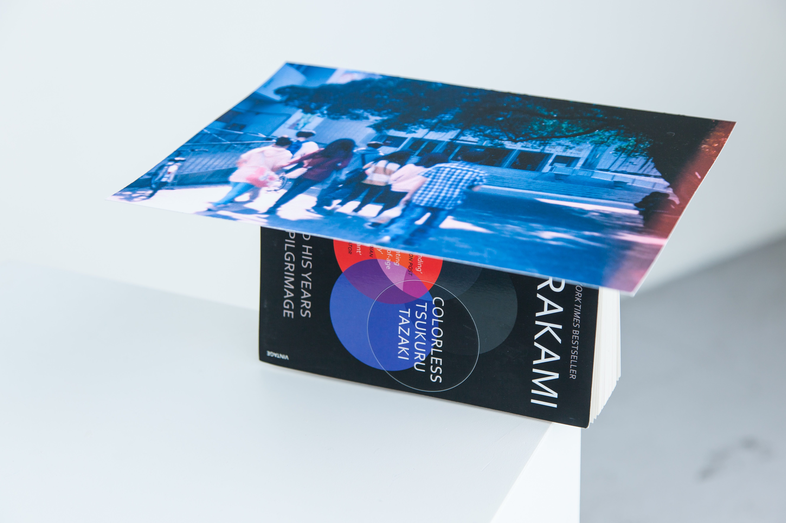

蔡
孟
璇
Pure Chance had brought them together. (2016)
digital c-print from film photograph and Colorless Tsukuru Tazaki and His Years of Pilgrimage from Haruki Murakami.
One photograph is placed on the spine of the book without adhesive. The book forms a reverse V-shape to support the photograph on top. The photograph and the book are positioned at the edge of a plinth, in a dangerous balance, and in the triangle corner of the space. V formation is the way migratory birds fly together, in order to save energy for each other on the long and tiring trip. The Murakami's book is about how a group of friends experience an extreme sense of together-ness and how it fell apart.
 